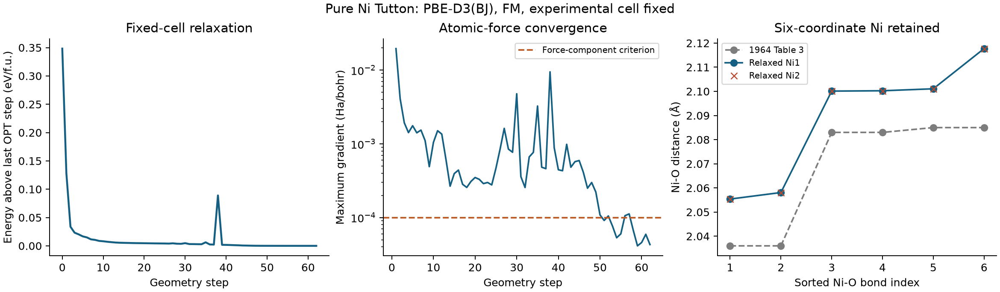

Tutton crystals: periodic DFT
Fixed-cell Ni-Tutton geometry optimisation and audits of crystal reference cycles for solubility prediction.

Result scope
Fixed-cell geometry convergence does not establish zero-pressure stability. Later reference crystals have imaginary modes and unmatched residual forces. Their solubility predictions failed comparison with experiment and remain diagnostics.